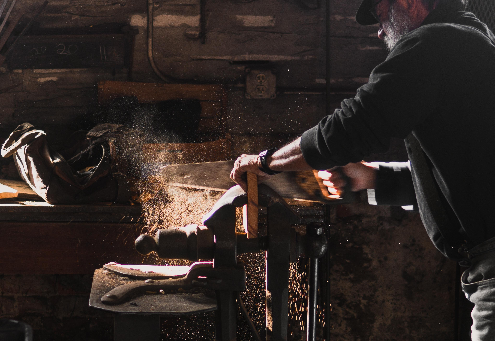

가담
가구를 담다.
수제 가구
목공샵
체험
체험
경험에서 체험으로.

이제 내
손으로
해 볼 시간.
우리 가담에서 만나본 수제 가구들, 만나보면 수제 가구만의 매력에 빠져 누구나 자신만의 수제 가구를 갖고 싶을 겁니다.
그래서 저희 가담은 그러한 소비자들을 위해
수제 가구
체험
까지 준비했습니다.
직접 공방에서 자신이 고른 원목으로 작은 소품부터 큰 가구까지 직접 디자인까지 하며 가구를 만들 수 있습니다.